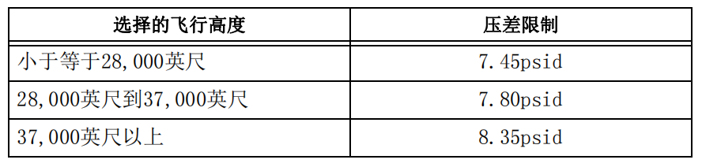
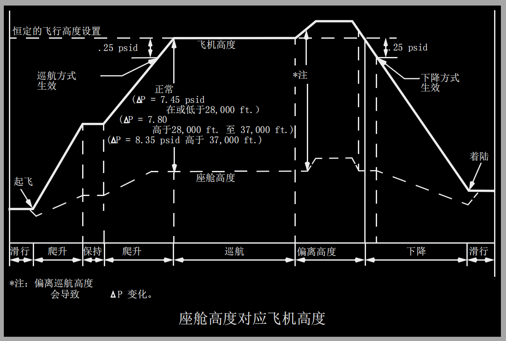

系统说明:
增压系统介绍:
飞机所有阶段工作过程中的座舱增压控制是通过座舱压力控制系统来完成的。座舱压力控制系统包括一套通过选择自动（AUTO）或备用（ALTN）来工作的两个完全相同的自动控制器（模式）和一套飞行员控制的人工（MAN）模式。
该系统使用由空调系统分配并提供的引气。通过调节排气活门和机外排气活门来控制增压和通风。
释压活门
两个释压活门限制压差最大不超过9.1psi，以此提供安全释压。
反向释压活门则防止外部大气压力超过内部座舱压力。
座舱压力控制器
座舱高度通常由座舱压力控制器按在飞机最大核定升限41,000英尺处，座舱高度8,000英尺的比例进行级控。
座舱压力调节器以下述方式控制座舱高度：
• AUTO（自动）– 自动增压控制，正常工作方式。使用直流电机。
• ALTN（备用）– 自动增压控制，备用工作方式。使用直流电机。
• MAN（人工）– 人工进行系统控制，使用直流电机。
大气数据惯性基准组件(ADIRUs)为两个自动控制器提供了外界静压、气压修正高度、未修正高度及修正空速。ADIRU还能接收来自机长和副驾驶气压表（BARO）参考选择器上的气压修正。
自动控制器还接收两个失速管理计算机提供的油门位置和来自空/地传感器的信号。

增压排气
座舱排气是通过排气活门和机外排气活门来控制。少量的可通过厕所和厨 房通风口、各种固定的通风口以及密封泄漏来排放。
排气活门
排气活门是大部分客舱循环空气的舱外排气口。客舱气流被吸入足部排气格栅板，环绕后货舱流动，在那里提供加温，并通过排气活门排向舱外。
机外排气活门
在地面和低压差飞行中，机外排气活门打开，将E&E舱内流出的热空气排出舱外。
在高座舱压差飞行中，机外排气活门通常是关闭的，排放气体扩散至前货舱的衬垫中。
但是，如果任一空调组件电门置于高流量位，且(按选型)右侧再循环风扇关闭，则机外排气活门打开，以便在排烟形态下增强通风。
自动方式操作
自动（AUTO）系统由两个完全相同的控制器组成。每一次新的飞行，交替地使用一个控制器作为主操作控制器。另一个自动控制器作为备用，可立即投入使用。
在自动（AUTO）和备用（ALTN）方式中，使用增压控制面板，在自动控制器中预设两个高度：
• FLT ALT（飞行或巡航高度）。
• LAND ALT（着陆或到达机场高度）。
在地面，机场起飞高度（实际座舱高度）可随时输入自动控制器。空/地安全传感器感应飞机是在地面还是在空中的信号。
在地面和低功率设置时，座舱通过驱动排气活门至全开位置来释压。
在地面高功率设置时，座舱开始增压。控制器调节排气活门趋向关闭，缓慢地给座舱增压。对乘客和机组人员来说，地面座舱增压可缓和地过渡至增压飞行，同时，也使起飞期间系统对于地面效应压力变化有更好的响应
在空中，自动（AUTO）控制器使飞机高度与座舱高度之间保持一个适当比例的压差。座舱高度按飞机爬升率成一定比例的增加，使其变化被控制在要求的最小速率内。
如果飞机在未达到预设巡航高度前就开始下降，琥珀色的非计划下降 （OFF SCHED DESCENT）指示灯就会亮，例如，中断爬升飞行并返回起飞机场的情况。控制器能够编程控制座舱以起飞机场标高着陆，而不需要飞行员再输入。如果飞行高度（FLT ALT）指示器被改变，自动回到以初始的起飞机场标高着陆的功能将丧失。
当飞机爬升到与选定的飞行高度（FLT ALT）压差在0.25psi以内时，巡航方式激活。在巡航过程中，控制器根据下表中的压差限制，保持尽可能低的座舱高度。在某些情况下，选择的着陆高度（LAND ALT）可能超过压差限制确定的目标座舱高度。在这些情况下，控制器将保持座舱高度略低于所选的着陆高度LAND ALT。当控制器调节排气活门以保持恒定的座舱高度时，飞行高度的偏离会引起压差的变化。

当飞机从选定的飞行高度（FLT ALT）下降0.25psi时,下降方式生效。
座舱开始按比例下降至略低于选定的着陆高度（LAND ALT）。控制器设置使座舱进行微增压着陆，以使在着陆进场过程中，急速的高度变化引起的座舱压力变化最小。
滑入时，控制器驱动排气活门缓慢至全开位置，座舱释压。
如果有任何下述情况发生，琥珀色的自动失效（AUTO FAIL）指示灯亮：
• 失去直流电源
• 控制器故障
• 排气活门控制故障
• 压差过大（>8.75psi）*
• 座舱压力改变率过大（±2000海平面英尺/分）*
• 高座舱高度（15,800英尺以上）*
* 如果控制器未作出恰当反应。
自动失效（AUTO FAIL）指示灯亮，则增压控制自动转换到另一个自动控制器上（ALTN方式）。
转动增压方式选择器至ALTN位置，自动失效（AUTO FAIL）指示灯熄灭，但备用（ALTN）指示灯仍亮，表明处于单通道工作状态。

高高度着陆
通过选择高高度着陆开关到开（ON），高高度着陆系统接通。这个开关位于座舱高度面板上。在高高度着陆系统接通，且实际着陆高度已调定情况下，当下降模式生效时，控制器将座舱高度调至着陆机场标高。从一个高高度机场起飞后，系统将在座舱高度下降通过8,500英尺时返回正常工作状态。
人工方式操作
增压方式选择器置于人工（MAN）位时，绿色的人工（MANUAL）指示灯亮。
如果自动（AUTO）和备用（ALTN）两个方式均失效，就采用座舱高度人工调节。在人工方式下，通过监控座舱高度面板和排气活门位置指示器指示的活门位置，使用排气活门位置电门调节排气活门。由备用直流系统提供电源的隔离式直流（DC）电机，以比自动方式慢的速率来驱动排气活门，排气活门运动的全过程最多需要20秒钟的时间。